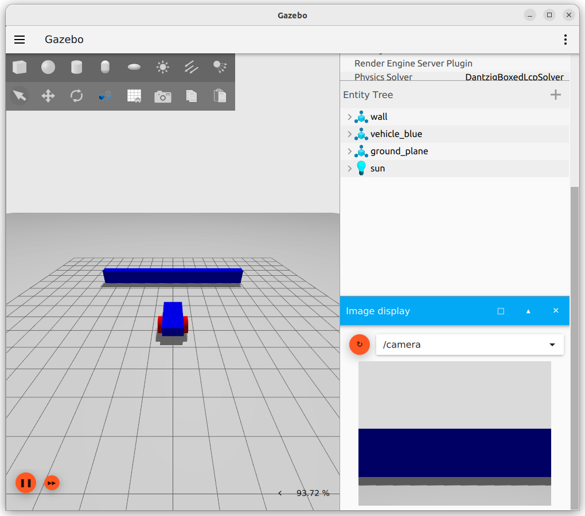
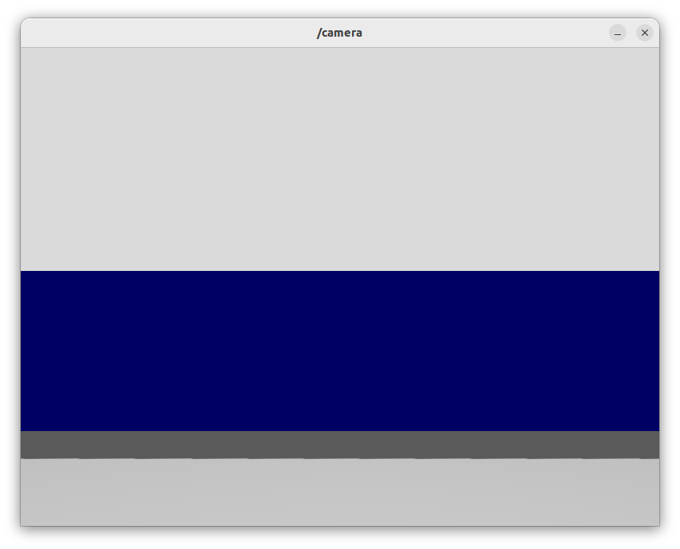
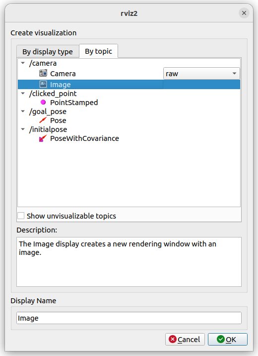
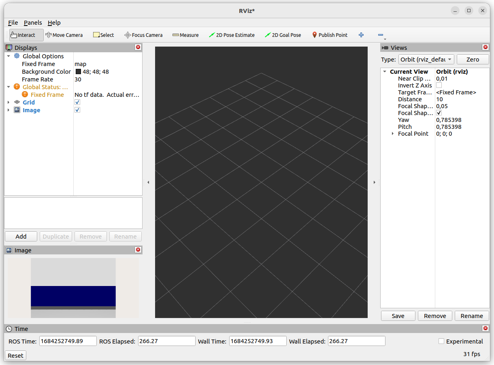
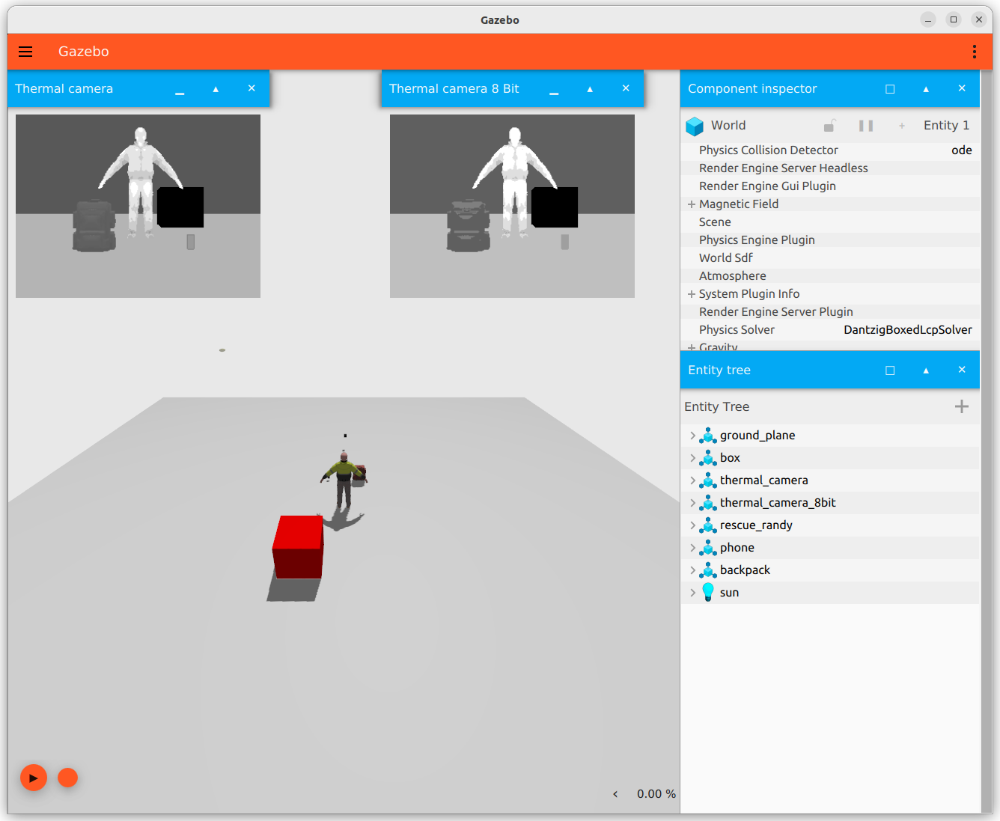
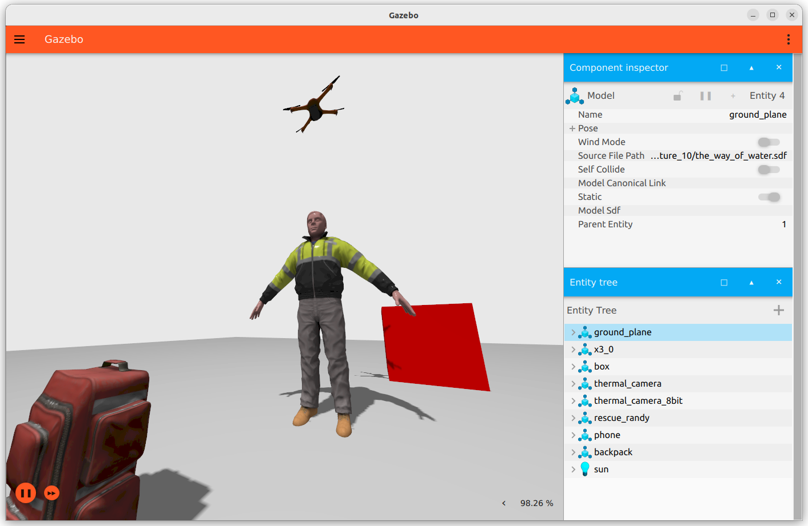
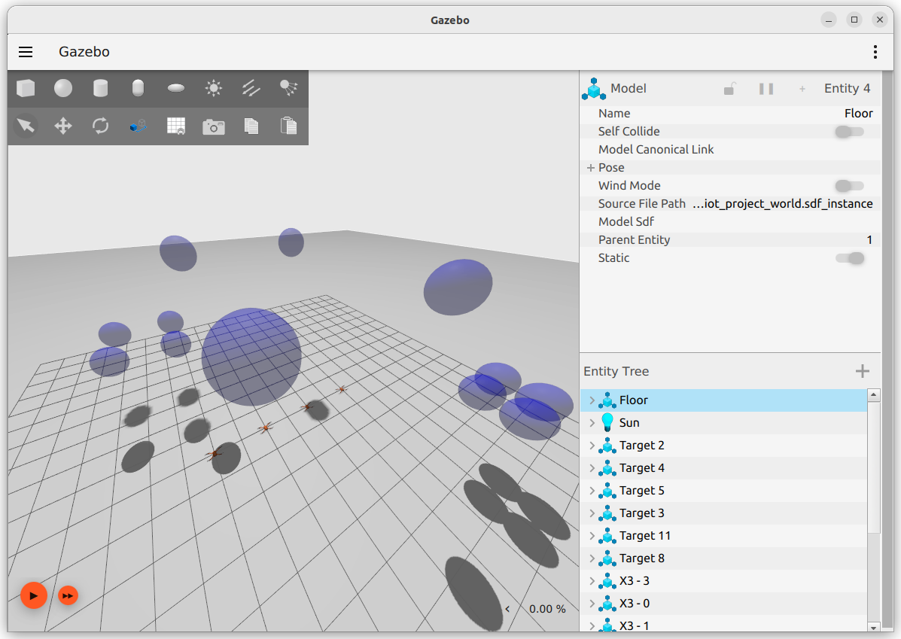
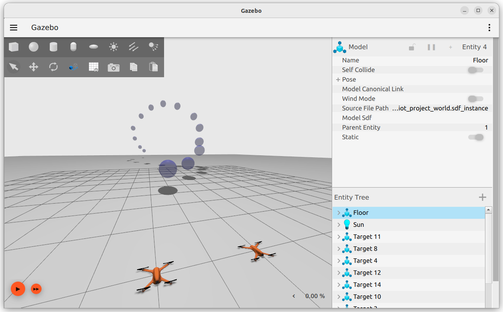

IoT Lab Lecture 10 - 18/05/2023
In this lecture, we are going to see briefly how you can add a camera to a Gazebo robot.
We will use the data published by the camera in a node to display the image to the screen using the OpenCV libraries.
After that, we will spend some time brainstorming with the project, by trying new simulation instances that uses wind!
Adding a camera sensor to a Gazebo robot
Let's continue building on top of the robot we built during the last lecture. This time, we will add a sensor camera.
The model, modified from the last lecture, is available here: vehicle_blue_lidar.sdf
First of all, let's add the camera sensor to our robot.
There is no need to import additional plugins, as we have already imported the ignition-gazebo-sensors-system last time in order for our
lidar sensor to work, the camera will use the same one.
Similarly to like we did for the lidar sensor, we can define the camera sensor in the same way, just by adding the following tags in our chassis link:
<sensor name="camera" type="camera">
<pose relative_to='lidar_frame'>0 0 0 0 0 0</pose>
<topic>camera</topic>
<camera>
<box_type>3d</box_type>
<horizontal_fov>1.047</horizontal_fov>
<image>
<width>800</width>
<height>600</height>
</image>
<clip>
<near>0.1</near>
<far>10</far>
</clip>
</camera>
<always_on>1</always_on>
<update_rate>30</update_rate>
<visualize>true</visualize>
</sensor>
This will create a new gazebo topic /camera which publishes the camera image at the specified rate. This image can be easily bridged to ros using the
ros_gz tools. Before doing that though, let's see if everything works in the Gazebo part.
To test our camera, we can lunch a plugin called Image Display in Gazebo. Which should show you something like this:

Try to also spawn the Teleop plugin and move around your robot. You should get a live feed from the camera in the image frame.
Bridging the image feed
Now that everything is working in the Gazebo part, is time to bridge everything to ROS so that you can start implementing your solution using everything we have seen so far.
To do that, there is a tool in the ros_gz package that we will use to create the bridge, similarly to what we have seen with topics and services.
To bridge the image feed on our /camera topic, you can simply type:
ros2 run ros_gz_image image_bridge /camera
That's it, the image is now bridged in ROS and ready to be used in your code.You can verify if your bridge is correctly working by using a particular tool in ROS to visualize Image messages, for our case:
ros2 run image_tools showimage image:=camera
If you are getting a live feed from the robot camera, everything is working fine so far.  The same image feed can also be viewed inside rviz2 to have everything under one single view.Adding our camera to an rviz2 window is not so different from adding a lidar sensor.  And this should add to your rviz2 window a view of the camera on the bottom left:  You can also add the lidar scanner to your view just like we did in the last lecture and see how the two sensors work in conjunction.
It should be clear by now how useful rviz can be when working with real drones. When working with real hardware, having everything at your disposal under one single window is imperative in order to have a clear view of your running test.
Working with the camera feed using OpenCV
Now that the camera feed is ready to be used, you may want to use it in your code to work with it, maybe to perform some image recognition task.
You can already see what kind of messages the image feed is producing, just by lookint at the interface of the messages. Using an echo command
on the publishing topic can show you exactly what the messages are.
Nonetheless, it may be hard to make some sense of the data of the image on yourself. It is possible to work directly with the matrix of the imagedata,
but it's a waste of time on your part.
ROS has already built in some functions for you to transform an image message to an OpenCV image. Let's see how we can do that.
Let's create a new node which will act exactly like the showimage tool for us. Building other functions on top of that then is just a matter of
learning to use OpenCV to perform the tasks that you want to.
In your node, you can import OpenCV and some useful functions like this:
import cv2
from cv_bridge import CvBridge
bridge = CvBridge()
To convert the image we receive from the topic we can simply use the bridge we just created like this:
try:
cv_image = bridge.imgmsg_to_cv2(msg, "passthrough")
except:
self.get_logger().info("CvBridge Error")
After that, we can use the OpenCV libraries to show the image on our screen. This function will take in input an OpenCV image and display it on screen:
def show_image(img):
cv2.imshow("Image Window", img)
cv2.waitKey(3)
That's it! If the image is being displayed correctly on your screen, everything is working and you are ready to use your image feed to perform some task instead of simply
displaying the image itself. Want to perform some object detection? Find your target in your camera to turn to? OpenCV should be really simple to use, as it is really well documented online and full of ready to be used examples.
We will try to do something with it in the next part.
Thermal camera
Switching from a normal camera to a thermal one is really simple. In Gazebo, all you have to do, is changing the sensor type from camera to thermal,
and that's it. You can actually load an already defined Gazebo example to work with thermal camera, which is the thermal_camera.sdf world.
The world should look something like this:

We have something missing though, right? While our camera is already working, we have never defined the temperature of an object so far.
To do that, we have a Gazebo plugin that we can add under the visual of an object, to define its temperature property.
This will do the trick:
<plugin
filename="ignition-gazebo-thermal-system"
name="ignition::gazebo::systems::Thermal">
<temperature>200.0</temperature>
</plugin>
Done. You can now define objects in your simulation and assign a temperature to it. You can also bridge the image feed to your ROS project and work with it.The following exercise is optional and intended for those who wish to familiarize themselves with OpenCV and develop some skills with it.
Extra Exercise - The Way of Water
Can you use the OpenCV libraries to detect the brightest cluster of pixels in your screen (i.e, the hottest object)?
What you are here requested is to create a ROS drone which uses camera(s) to find the hottest object in the simulation, and fly on top of it.
The idea is that the drone should be able to then drop water on top of the hot object in order to cool it. But that's ok, we are happy if the drone flys on top of it for now.
You may want to add two cameras to your drone, one to detect far away objects which points in front of it (maybe with a little bit of angle downards), and one directly below it,
so that it can precisely move on top of the object at the last step.
Give it a try!

Project Brainstorming: Face the Wind!
The repository of the project now contains two simulations which use wind to test your solution to the project, try to pull the new simulation files!
The first stage is the following:

Four drones to use. If you are clustering just by looking at distances, your drones may not take an optimal path between targets (or do they?).
Some cluster are also very tight, this should challenge the movement of the drones if you are still using way too simple turns.
The second stage is the following:

You have only two drones to use, and the wind will give you an hard time coming back to the first target, considering that you have only 120 seconds of patrolling time.
You may be able to visit the targets efficiently if the movement of the drones is really well executed, and distributed, between targets.
Good luck!
Conclusions
This it the last lab lecture for the IoT course.
While not necessary for the project, hopefully these last two lectures have given you a basic idea on how to use sensors in a simulated environment for your robot, and got you more
confident in using rviz2.
If you have a Raspberry and an Arduino lying around at home, you may try to impleent some things that we have seen so far to a physical robot.
Ideally, you would have to bridge the controls of the moving parts to a ROS topic, so that you can control them with it.
By subscribing both the real and the simulated robot on your command topic, you may move both of them with one single controller. This allows you to see how the simulated environment
compares to the real one.
There is no limit with what you can do with the tools we have seen in these lectures.
Hope you had fun along the way!
Feel free to email me for any feedback, questions (both for the course or the project), or anything else you may want to know!
Goodbye!